Executive Summary
Airlines and MRO operators routinely make capital allocation decisions based on maintenance liability data that is never audited at the record level. Cancelled flights get counted as completed cycles. Ghost aircraft accumulate wear with no registry tracking. This project forensically audits 7.07 million BTS flight records against the FAA Master Registry to quantify the actual, verified maintenance liability of the US domestic fleet.
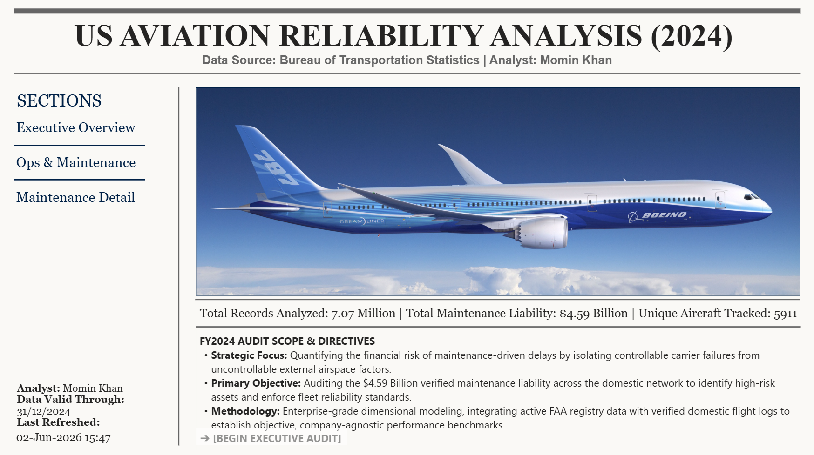
Key Findings
01 — The $17.3M Phantom Liability Catch
$17,336,700The standard MRL formula applies a $180 per cycle charge to every flight record uniformly. Initial processing revealed 96,315 cancelled flights incorrectly included in the accrual logic — generating phantom maintenance liability that never existed. The pipeline enforces a hard-zero on cancelled flights upstream in the Silver layer before any cost calculation runs.
This is the difference between a dashboard and a forensic audit.
02 — Ghost Aircraft Reconciliation
199 ConfirmedCross-referencing BTS flight logs against the FAA Master Registry produced 314 null matches — aircraft flying with no official record. Root cause: inconsistent N-prefix formatting across both datasets. After applying tail number standardization: 314 raw nulls → 115 resolved → 199 confirmed Ghost Aircraft. These assets were accumulating flight hours and cycles with zero official registry tracking.
03 — 72.5% of Delays Are Carrier-Controllable
72.5%The delay decomposition isolates carrier-controllable failures (Carrier Delay) from external factors (weather, NAS, security). 72.5% of all delay minutes are the airline's direct operational responsibility — not weather or ATC. This is the accountability metric that drives intervention decisions and capital reallocation.
04 — Geographic Liability Clustering
TX $1.02B · FL $885M · CA $757MMaintenance liability concentrates in legacy hub states independently of raw flight volume — pointing to station-level maintenance culture and infrastructure age, not purely operational scale. Generalized fleet upgrades are a misallocation of capital.
CEO Executive Overview
Macro-level view of the $4.59B liability. Dynamic DAX combo chart with a $1.5B strategic reserve target line injected across the financial timeline. Carrier sector breakdown by total delay cost. Cumulative MRL accrual trend through FY2024.
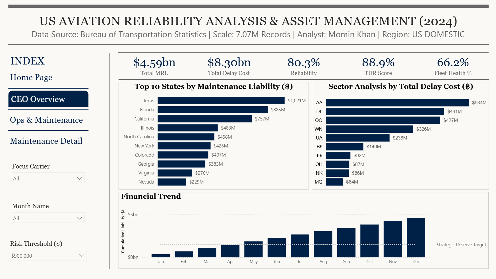
The Kill Zone
Asset Risk Audit: Liability vs. Delay Impact
A dual-axis scatter plot — Total Maintenance Liability (X) vs. Total Delay Impact (Y) — that isolates the top 1% of assets simultaneously exceeding both the cost and delay threshold. Every dot is a tail number. Navy dots are within budget. Red dots have crossed the threshold and require immediate intervention.
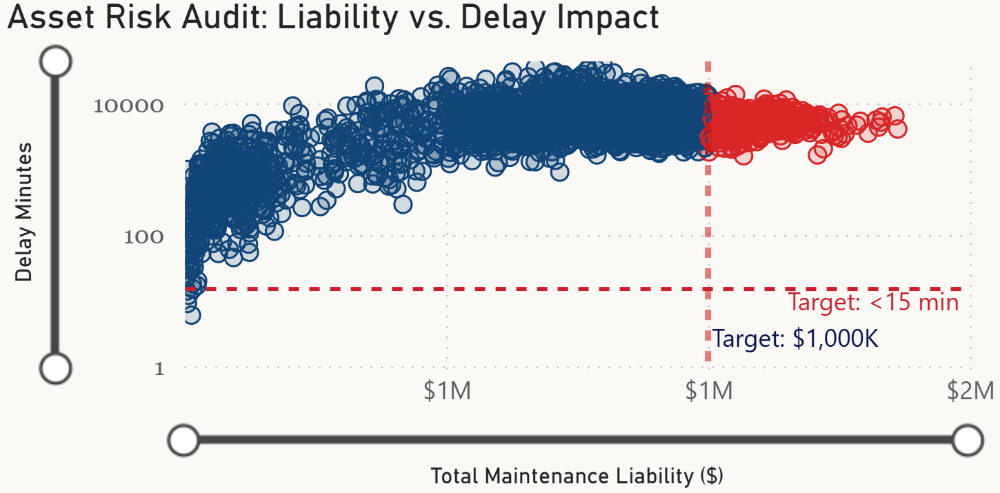
The dashed threshold lines are live Power BI parameters. Moving the Risk Threshold slicer reclassifies every dot, updates the priority table, and recalculates the at-risk count — all in under a second via DAX context propagation across 7M records.
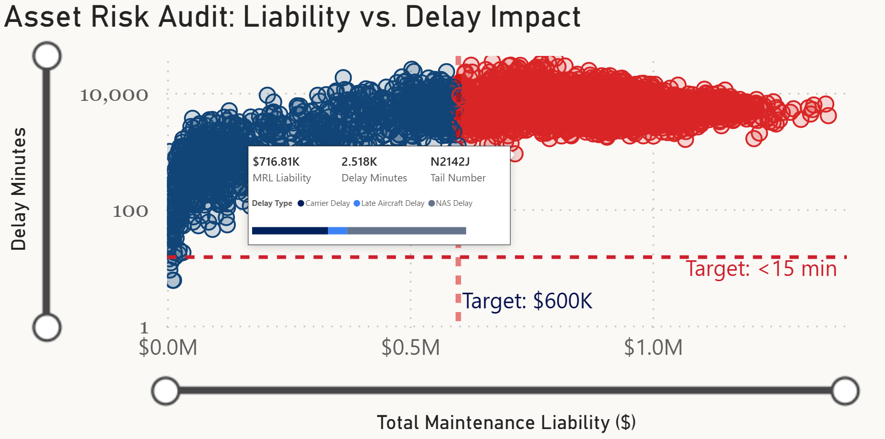
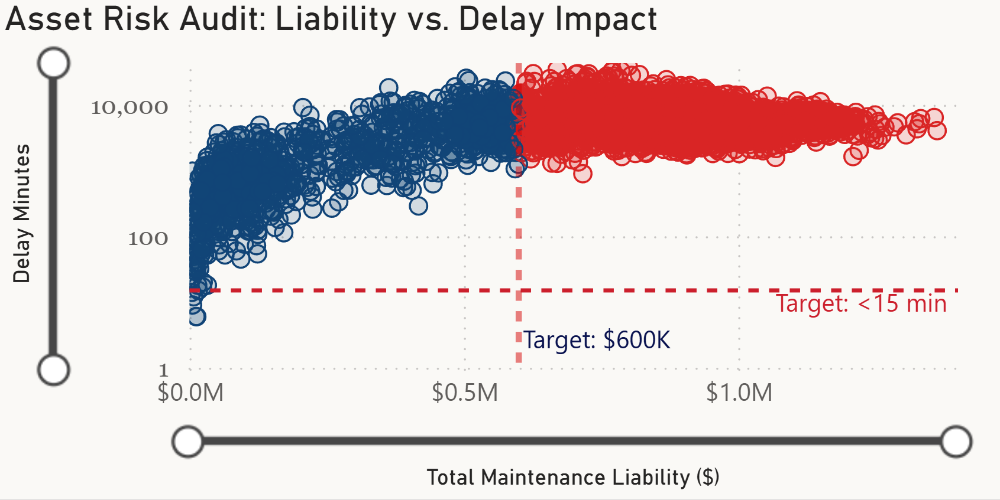
Dynamic Threshold Demo
Moving the risk threshold from $600K to $1.2M reclassifies the entire fleet simultaneously. This is not a filter — it is a live DAX parameter changing the color logic, the priority table, and the at-risk count across all visuals on the page.
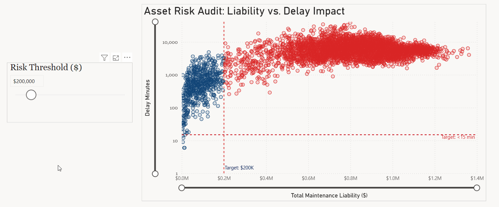
Maintenance Priority Table
The scatter drives a ranked priority table — aircraft that exceed the threshold are surfaced automatically, sorted by maintenance cost, with live OVERHAUL REQUIRED status icons computed in DAX.
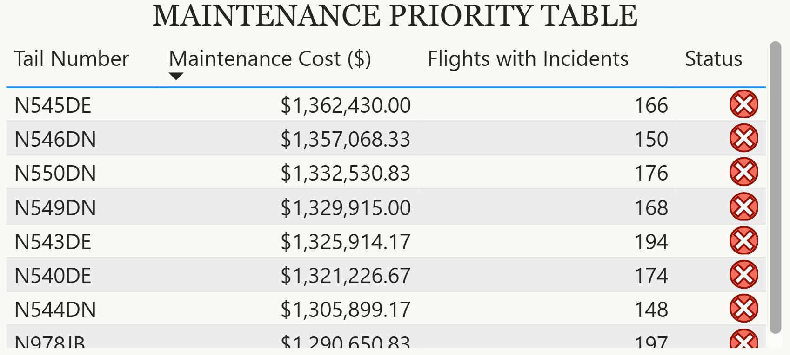
Ops & Maintenance
Full Ops & Maintenance page showing the Kill Zone scatter, carrier risk breakdown, and ranked priority table. TDR Score, Carrier Delay %, On-Time Performance, and Avg Technical Delay displayed as KPI cards.
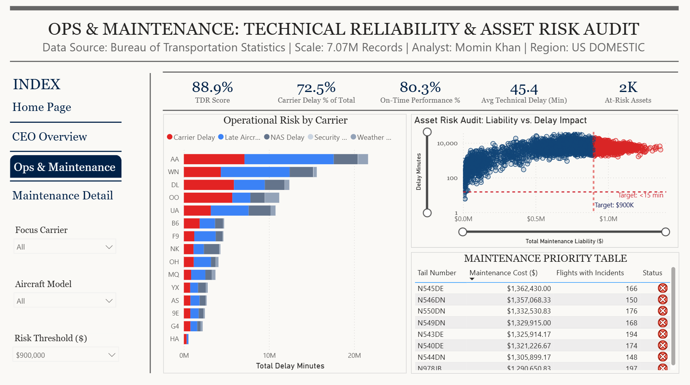
Maintenance Detail: Asset Technical Log & Risk Profile
Forensic drill-through to individual tail number level. Displays MRL liability, remaining reserve budget, annual utilization hours, liability burn rate per flight, 12-month cost vs. delay trend, and live OVERHAUL REQUIRED / OPERATIONAL status — all computed in DAX against the 7M-row fact table.
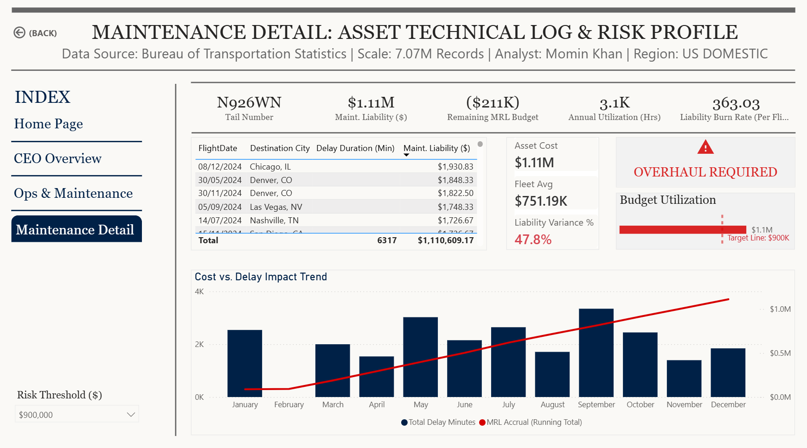
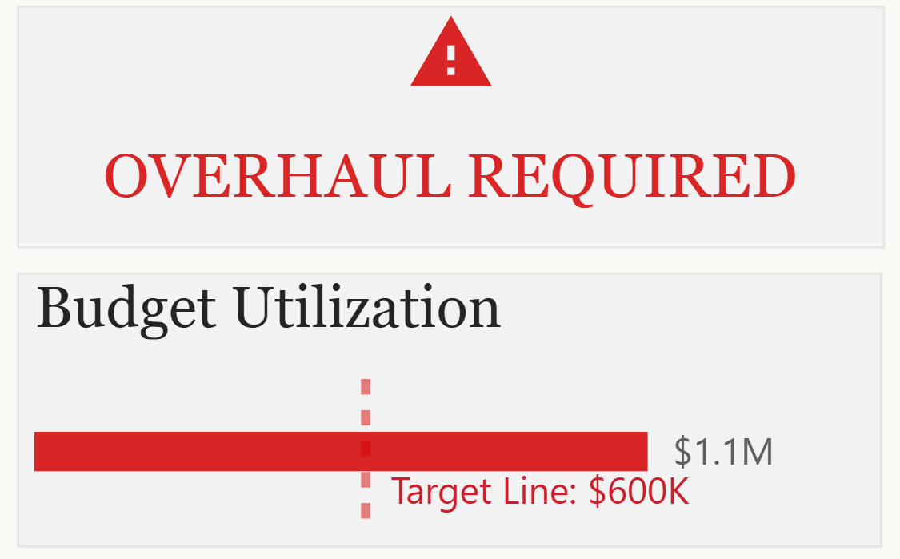
Technical Architecture: The Medallion Pipeline
Built to handle 11GB+ of unstructured regulatory data without memory failure or schema collapse. Standard Pandas DataFrames crash at this scale — DuckDB's columnar vectorized engine processes the same dataset in memory-efficient SIMD chunks.
RAW BTS + FAA DATA (12 monthly ZIPs + MASTER.txt + ACFTREF.txt)
│
▼
┌─────────────────────┐
│ BRONZE LAYER │ Monthly BTS ZIPs downloaded with retry logic.
│ download_and_ │ CSVs extracted. Dirty entries ingested without
│ extract() │ schema failure.
└─────────────────────┘
│
▼
┌─────────────────────┐
│ SILVER LAYER │ DuckDB vectorized ETL on 7.07M rows.
│ run_silver_ │ N-prefix standardization. Corrected MRL formula.
│ pipeline() │ 2 fact tables + 3 dimensions extracted.
└─────────────────────┘ 6x SNAPPY Parquet files exported.
│
▼
┌─────────────────────┐
│ AUDIT LAYER │ Set difference: active_fleet − registered.
│ run_ghost_ │ MASTER.txt + ACFTREF.txt merged.
│ aircraft_audit() │ 199 ghost aircraft confirmed and exported.
└─────────────────────┘
│
▼
┌─────────────────────┐
│ GOLD LAYER │ Power BI semantic layer. 40+ DAX measures.
│ Power BI / DAX │ Fact Constellation Schema. Parametric
└─────────────────────┘ risk simulation. SVG status cards.
Core Pipeline Snippets
MRL Formula — $17.3M Phantom Liability Eliminated
-- MRL Formula: (AirTime / 60 × $250) + $180 per cycle -- Cancelled flights and null AirTime → hard-zeroed before calculation -- 96,315 cancelled flights × $180 = $17,336,700 eliminated at source CASE WHEN TRY_CAST(Cancelled AS INTEGER) = 1 OR TRY_CAST(AirTime AS INTEGER) IS NULL THEN 0.0 ELSE ((TRY_CAST(AirTime AS INTEGER) / 60.0) * 250.0) + 180.0 END AS MRL_Liability
Ghost Aircraft Detection — Set Difference
# Set difference: tail numbers flying with NO FAA registry match # Equivalent to LEFT JOIN WHERE faa.tail IS NULL active_fleet = set(fact_tails['Tail_Number'].dropna().apply(clean_tail)) registered = set(merged_master['N-NUMBER_CLEAN'].dropna()) orphans = active_fleet - registered # Result: 199 confirmed Ghost Aircraft → Ghost_Aircraft_Audit.parquet
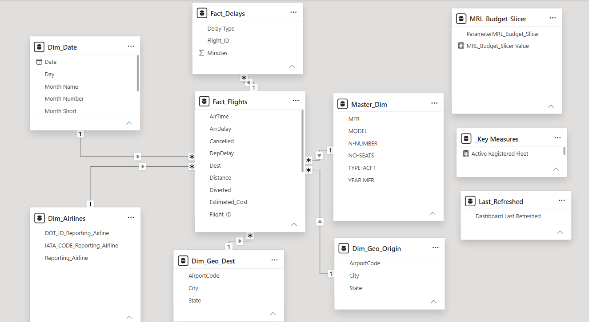
DAX Analytical Engine
40+ custom DAX measures power the dashboard. Five that define its analytical depth:
| Measure | Description |
|---|---|
| Months to Inflection | Predicts months remaining before cumulative MRL accrual burns through the $1.5B strategic reserve, based on current 30-day burn rate. Forward-looking, not rear-view. |
| Scatter Color Logic | Dynamic DAX color classification driving the Kill Zone. Evaluates [True Total MRL Liability] > [MRL_Budget_Slicer Value] per aircraft, returning #D92525 (red) or #114477 (navy) on every threshold change. |
| Controllability Ratio | Isolates carrier-controllable delay cost from external (weather, NAS, security) delay cost. Produces the 72.5% accountability figure that drives operational intervention decisions. |
| Liability Burn Rate (per flight hour) |
MRL cost accruing per flight hour for any selected aircraft. Surfaces which assets are degrading fastest relative to their utilization — shown live in the drill-through. |
| Fleet Health % | Parametric health score: percentage of registered aircraft currently under the MRL threshold. At $900K threshold: 66.2% — 1 in 3 aircraft in the active fleet is over budget. |
Output Schema
Six SNAPPY-compressed Parquet files exported to /data_processed/ from a single pipeline run:
| File | Rows | Cols | Description |
|---|---|---|---|
| Aviation_Fact_Table.parquet | 7,079,061 | 15 | Core flight metrics, MRL liability, delay cost |
| Aviation_Fact_Delay_Table.parquet | 2,354,307 | 3 | Unpivoted delay cause breakdown (flights with delays only) |
| Aviation_Airlines_Dim.parquet | 15 | 3 | Carrier codes and DOT/IATA identifiers |
| Aviation_Geo_Dim.parquet | 348 | 3 | Airport codes, cities, and states |
| Master_Dim.parquet | 5,913 | 6 | FAA registry: manufacturer, model, type, seats |
| Ghost_Aircraft_Audit.parquet | 199 | 1 | Unregistered tail numbers confirmed flying in 2024 |
Sample Ghost Aircraft (199 Confirmed)
5 of 199 · Full list in Ghost_Aircraft_Audit.parquet
How to Run
# 1. Clone the repository git clone https://github.com/MominPathann/US-Aviation-Reliability-Audit.git cd US-Aviation-Reliability-Audit # 2. Install dependencies pip install -r requirements.txt # 3. Place FAA registry files in data_raw/ # Download: https://registry.faa.gov/database/ReleasableAircraft.zip # Extract MASTER.txt and ACFTREF.txt into data_raw/ # 4. Run the pipeline python main_pipeline.py # Note: BTS data download is commented out by default. # To download 12 months of raw BTS data (~11GB), uncomment: # download_and_extract()